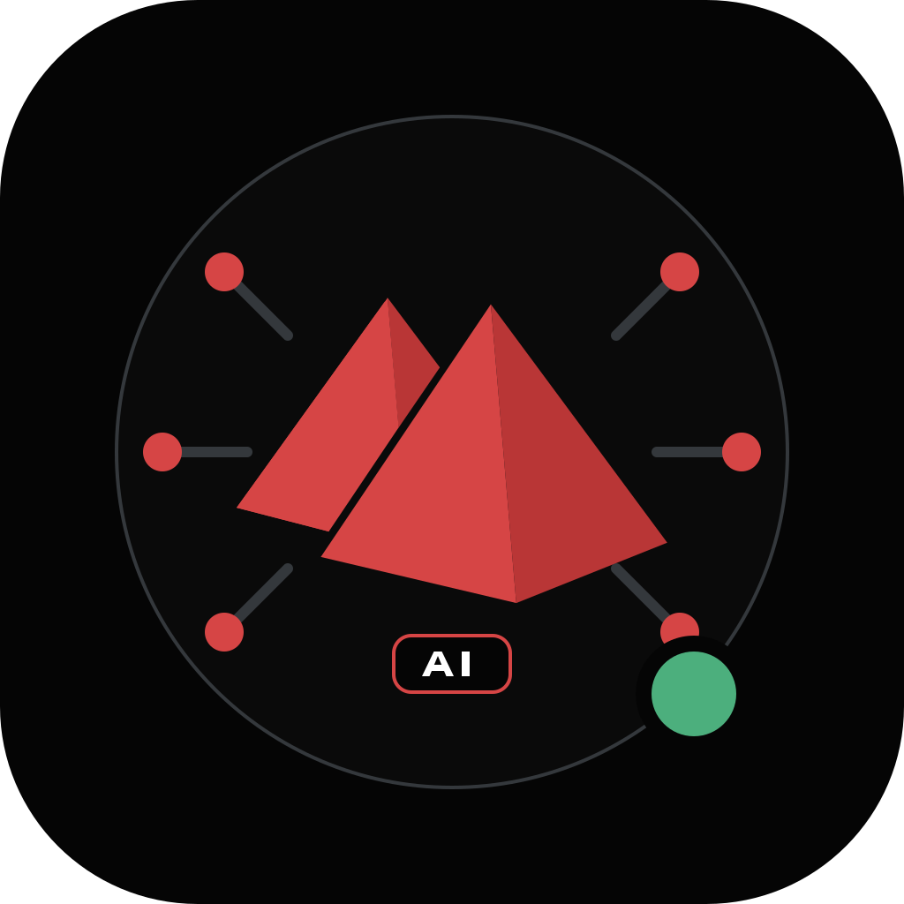
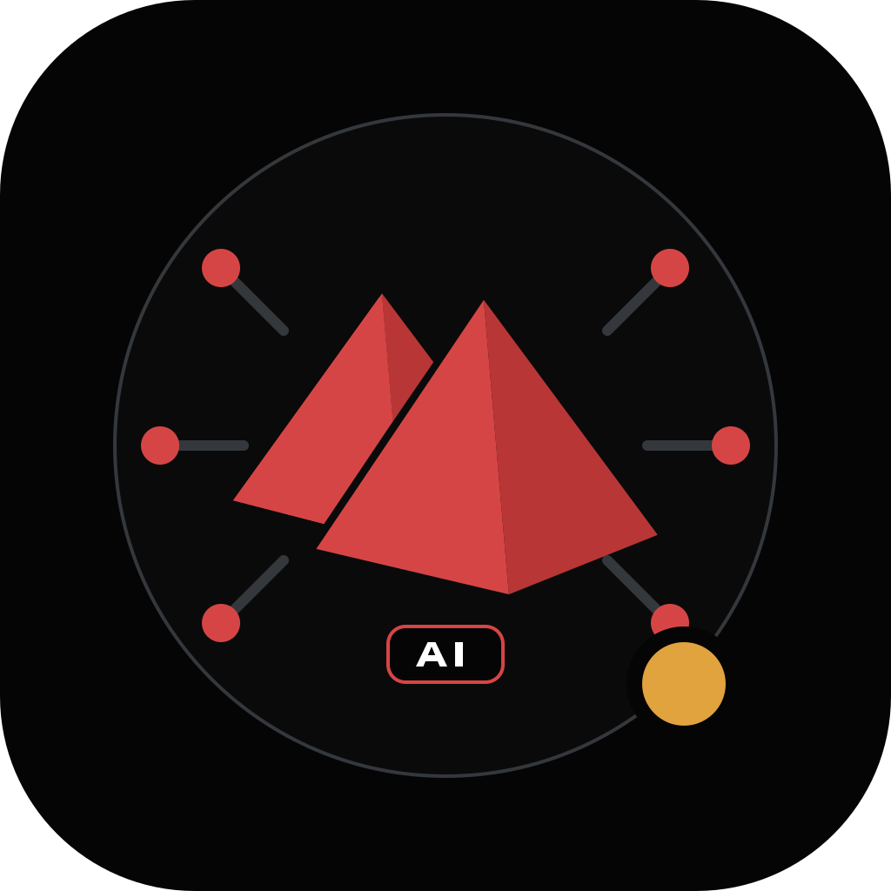

Основной · тёмный
Выбор по умолчанию для профилей, чатов и внутренних сервисов.
primary-dark.svgSVG ↓ИИ-аккаунт технологического хаба
Точный, спокойный и явно искусственный интеллект внутри бренда MOKO. Знак остаётся прежним; ИИ-контекст добавляется простыми внешними элементами.
Официальный знак MOKO не изменён. Сеть задаёт технологический контекст, а короткий шильдик прямо сообщает, что аккаунт управляется ИИ.
Выбор по умолчанию для профилей, чатов и внутренних сервисов.
primary-dark.svgSVG ↓
Для устойчиво светлого окружения. Фирменные грани остаются красными.
primary-light.svgSVG ↓
Для одноцветной печати и ситуаций, где полноцветный знак теряет контраст.
moko-ai-mono.svgSVG ↓

MOKO AI не создаёт второй корпоративный знак. Его идентичность складывается из фирменной основы и небольшого слоя данных вокруг неё.
Геометрия, ориентация и фирменные цвета граней зафиксированы.
Сеть и шильдик работают вместе; новые роботы, мозги и искры не добавляются.
В 24–63 px используется отдельный компактный файл только со знаком.
Зелёный, янтарный и синий появляются только при реальном состоянии.
Красные остаются фирменными. Дополнительные цвета не украшают, а передают состояние.
#d64545#b93636#0a0a0a#4caf7d#e0a33e#4a7fb5MOKO AI говорит спокойно, обозначает ограничения и не выдаёт предположение за факт.
«Подойдёт светлая версия. Она сохраняет фирменные грани и читается на белом фоне. Перед публикацией проверьте круглую обрезку».
«Супер! Наш невероятный AI-бот идеально решит любую задачу за секунды».
Стартовые файлы остаются редактируемыми SVG. Растровый формат создаётся только как экспорт под площадку.
Новая ветка или новая ИИ-сессия не должна зависеть от старого чата. Решения и опыт передаются через четыре постоянных слоя.
Новая ветка → прочитать AGENTS.md → MEMORY → последние записи LOG → DECISIONS → создать SVG → обновить manifest/log/memory → validate → handoff